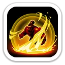
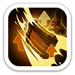
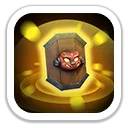
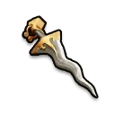
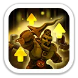

Королевская решимость
Создаёт щит на 5 секунд. Щит поглощает урон первым.
Щит: 220% / 260% / 300% / 340% / 380% от атаки

Щиты · гарнизон · снижение атаки врага
Гатот — защитный пехотный герой 8 поколения. Его сила не в Свирепом медведе, а в выживаемости: мощный щит, уклонение, повышение защиты пехоты и постоянное снижение атаки противника делают его одним из лучших бесплатных защитников своего поколения.
Максимальные базовые значения Гатота 8 поколения.
В Арене Гатот особенно силён на передней линии.

Создаёт щит на 5 секунд. Щит поглощает урон первым.
Щит: 220% / 260% / 300% / 340% / 380% от атаки
Запугивает всех врагов, снижая их атаку, и одновременно усиливает атаку Гатота за каждого запуганного героя на 3 секунды.
−1/2/3/4/5% атаки врага · +1/2/3/4/5% атаки за каждого врага
Даёт шанс полностью уклониться от обычной атаки и повышает шанс критического удара.
Уклонение 3/6/9/12/15% · крит 4/8/12/16/20%
Здесь раскрывается его главная специализация: оборона гарнизона и живучесть марша.
Постоянно повышает защиту пехоты Гатота.
Защита пехоты +6 / +12 / +18 / +24 / +30%

Каждая атака пехоты создаёт для неё щит на 1 ход.
Щит: 6 / 12 / 18 / 24 / 30% от атаки

Снижает атаку всех войск противника.
Атака врага −5 / −10 / −15 / −20 / −25%

На максимуме: +1 331 атаки, +1 737 защиты, +26 055 здоровья, +193% летальности пехоты и +193% здоровья пехоты.

Одна из лучших ролей Гатота. Щиты, защита пехоты и дебафф атаки работают именно на выживаемость.
Очень силён в затяжных боях и оборонительных маршах.
Крепкий фронтовик с мощным щитом, уклонением и снижением атаки врагов.
Защитный набор почти не увеличивает счёт. Гектор обычно полезнее для атакующего пехотного слота.
Да, особенно F2P. Гатот — один из самых выгодных героев 8 поколения благодаря Колесу удачи. Для Медведя он не замена Гектору, но для гарнизона, Арены и оборонительного PvP это очень сильное обновление пехоты.
Белая мгла · SOVA58 · данные проверены 23 октября 2026